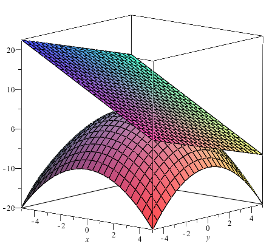
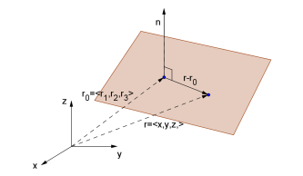
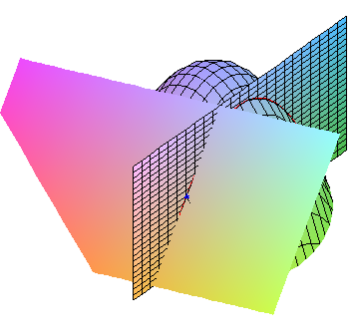
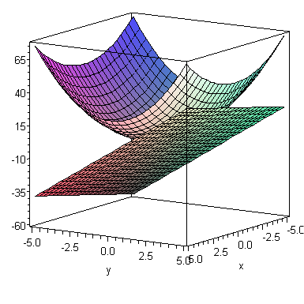
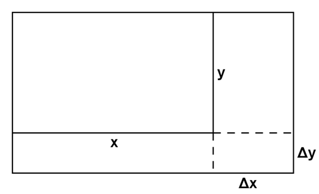

In Math1110 we looked at the idea of “the linearization of a function of one variable”. The idea was that near the point \(x=x_0\) we could approximate the function \(f(x)\) using the line tangent to the function at \(x=x_0\text{.}\) We called this tangent the linearization of the function at \(x=x_0\) and used it to derive the “linear approximation formula”,
\begin{equation*}
\Delta y \simeq f'(x_0) \Delta x\text{.}
\end{equation*}
These ideas can also be applied to functions of two variables.
Section3.1Tangent Planes
Recall that the graph associated with the function \(z=f(x,y)\) is a surface in \(\mathbb{R}^3\) (that passes the vertical line test). Wherever this surface does not have any discontinuities or cusp-like points it will have a tangent plane. Like the tangent line to the graph of a function of one variable, the tangent plane to the function \(z=f(x,y)\) at the point \((x_0,y_0)\) is the plane that “just touches” the surface at the point \((x_0,y_0,z_0)\text{.}\)
Example3.1.
For the function \(f(x,y) = 5-\dfrac{x^2+y^2}{2}\) the graph below shows the graph of the function and it’s tangent plane at the point \((x,y) = (2,1)\text{.}\)

Figure3.2.3D plot of \(f(x,y)= 5 - \dfrac{x^2+y^2}{2}\) and the tangent plane at \((2,1)\text{.}\)
To find the equation of the plane tangent to the function \(z=f(x,y)\) at the point \((x_0,y_0,z_0)\text{,}\) firstly recall that the equation of a plane in Cartesian form is given by
where \(\mathbf{n} = \langle a,b,c \rangle\) is a normal vector to the plane, \(\mathbf{r}_0\) is the position vector of a point on the plane and \(\mathbf{r} = \langle x,y,z \rangle\text{.}\)

Figure3.3.Representation of the normal vector \(\mathbf{n}\) to a plane.
Example3.4.
Find the equation of the tangent plane to the function \(f(x,y) = 5-\dfrac{x^2+y^2}{2}\) at \((x,y) = (2,1)\text{.}\)
Answer.
\(2x+y+z=\dfrac{15}{2}\)
Solution.
Now, we know that the partial derivative \(f_x(2,1)\) gives the slope of the tangent at \(x=2\text{,}\) to the curve of intersection of the surface associated with \(f\) and the plane \(y=1\text{.}\)

Figure3.5.
Since this tangent line lies in the plane tangent to \(f\) at \((x,y) = (2,1)\) the vector
will be a vector that is parallel to the tangent plane, (or lies in the tangent plane if we place it’s tail at the point \((2,1,\frac{5}{2})\)). Similarly, the vector
will be another vector parallel to the tangent plane. Since these two non-parallel vectors are parallel to the tangent plane, their vector product will give a vector normal to the tangent plane, i.e.
The Sage cell below uses the equation of the tangent plane given above to plot the tangent plane to the function \(f(x,y)=xy\) at a point \((x_0,y_0)\text{.}\)
Example3.7.
Find the equation of the plane tangent to \(z = x^2+2y^2\) at the point \((x,y)=(1,2)\text{.}\)

Figure3.8.3D plot of \(z = x^2+2y^2\) and the tangent plane at \((1,2)\text{.}\)
Answer.
\(2x+8y-z-9=0\)
Solution.
Firstly, note that when \((x,y)=(1,2)\text{,}\)\(z=9\text{.}\) Now
\begin{equation*}
z_x = 2x \: \text{ and so } \: z_x(1,2) = 2
\end{equation*}
and
\begin{equation*}
z_y = 4y \: \text{ and so } \: z_y(1,2) = 8\text{.}
\end{equation*}
Thus the equation of the tangent plane is
\begin{equation*}
z = 9+2(x-1)+8(y-2)
\end{equation*}
Recall that the vector equation of a line in \(\mathbb{R}^3\) is
\begin{equation*}
\mathbf{r} = \mathbf{r}_0 + t \mathbf{d}, \: t \in \mathbb{R}
\end{equation*}
where \(\mathbf{r} = \langle x, y, z \rangle\) is the position vector of a general point, \(\mathbf{r}_0\) is the position vector of a point that lies on the line and \(d\) is a direction vector for the line (i.e. a vector that is parallel to the line).
We know that a vector normal to the surface \(z=f(x,y)\) at the point \((x_0,y_0,z_0)\) is given by
For the function \(z=x^2+2y^2\text{,}\)\(z_x=2x\) and \(z_y=4y\text{.}\) Thus a direction vector for the line normal to \(z=x^2+2y^2\) at the point \((x,y)=(1,2)\) will be
Find the equation of the tangent plane to \(z=x^2-5xy+2y^2\) at the point \((x,y)=(-1,-2)\text{.}\)
2.
Find the equation of the tangent plane and normal line to \(z = \sqrt{x+y} \sin (xy)\) at the point \((x,y)=(0,1)\text{.}\)
3.
Show that every line that is normal to the sphere \(x^2+y^2+z^2 = 1\) passes through the origin.
Section3.2Linear Approximations
In Section 3.1 we found that the equation of the tangent plane to the function \(f(x,y)\) at the point \((x_0,y_0,f(x_0,y_0))\text{,}\) which is a linear equation.
When we use the linearisation of \(f\) at the point \((x_0,y_0)\) to approximate the function near the point \((x_0,y_0)\) we call this the linear (or tangent plane) approximation of \(f\) at the point \((x_0,y_0)\text{.}\) Notice that if we let the independent variables change by the amounts \(\Delta x\) and \(\Delta y\) then the linearisation will change from \(L(x_0,y_0)\) to \(L(x_0+\Delta x, y_0 + \Delta y)\text{.}\) Thus we can approximate the change in the function value \(z=f(x,y)\) by
On using the linearisation formula given above, we end up with the following result.
Definition3.12.The Linear Approximation Formula.
The linear approximation to the change, \(\Delta z\text{,}\) in the function \(z = f(x,y)\) when the independent variables change from \((x_0,y_0)\) to \((x_0+\Delta x, y_0 + \Delta y)\) is
\begin{equation*}
\Delta z \simeq f_x (x_0, y_0) \Delta x + f_y (x_0, y_0) \Delta y\text{.}
\end{equation*}
This result is sometimes called the “small change” formula for functions of two variables.
Example3.13.
For the function \(f(x,y) = 3x^4+2y^4\text{,}\)\(f(1,2) = 35\text{.}\) Use a linear approximation to estimate \(f(1.01,2.03)\text{.}\)
A steel ball has a mass, \(m\text{,}\) of 6300 \(\pm\)50 g and has volume, \(V\text{,}\) 800 \(\pm\)10 cm3. Find the density of the ball, including an estimate of the error.
Use a linear approximation to estimate the value of \(z\) at \((x,y) = (1.1,-0.02)\) for surface \(z = f(x,y)\) defined implicitly by \(z-yz^3 = x+2\text{.}\)
Answer.
\(z(1.1,-0.02) \simeq 2.56\)
Solution.
Firstly notice that when \(x=1\) and \(y=0\text{,}\)\(z=3\text{.}\) Thus \(z(1,0)=3\text{.}\) Now, via a linear approximation
\begin{equation*}
z(1.1,-0.02) \simeq z(1,0) + \Delta z
\end{equation*}
where
\begin{equation*}
\Delta z \simeq z_x(1,0) \Delta x + z_y(1,0) \Delta y\text{,}
\end{equation*}
and \(\Delta x = 0.1\text{,}\)\(\Delta y = -0.02\text{.}\) To find the partial derivatives we need to use implicit differentiation. Differentiating with respect to \(x\text{:}\)
Use a linear approximation to estimate the value of \(\sqrt{(2.01)^2-0.98}\text{.}\)
3.
A right angled triangle \(ABC\) with right angle at \(B\) is measured with \(AB = \) 10 \(\pm\)0.02 cm and \(BC = \) 3.4 \(\pm\)0.02 cm. What is the angle at \(A\text{,}\) including the error?
4.
In the figure below a rectangle initially with sides \(x\) and \(y\) has been made larger so that the sides are now \(x + \Delta x\) and \(y + \Delta y\text{.}\)

Figure3.16. Shade on the diagram the regions that represent:
The increase in area.
The linear approximation to the increase in area. Explain your answer.
Section3.3Quadratic Approximations
We have seen previously that for functions of one variable the idea of the linearisation of the function could be extended by considering the Taylor polynomial for the function.
Example3.17.
For the function \(f(x) = e^x\) the Maclaurin polynomial of degree \(n\) is
\begin{equation*}
T_2 (x) = 1 + x + \dfrac{x^2}{2}
\end{equation*}
gives a quadratic approximation to \(e^x\) about \(x=0\) and so on.
For functions of one variable we derived the Taylor series by trying to find a power series in \((x-a)\) that matched the function and all its derivatives at \(x=a\text{.}\) For functions of two variables we can use a similar idea to derive the Taylor series about the point \((x,y)=(a,b)\text{.}\) This series will be a power series in \((x-a)\) and \((y-b)\) that matches the function and its partial derivatives at the point \((x,y)=(a,b)\text{.}\) The formula for the Taylor series of two variables is quite lengthy to write and so we will not reproduce it here. However, as with functions of one variable truncations of this series are called Taylor polynomials and the Taylor polynomial of degree 1 is the linearisation of the function. Similarly, the Taylor polynomial of degree 2 will give us a quadratic approximation to the function.
Definition3.18.Taylor Polynomial of Degree 2.
The Taylor Polynomial of degree 2 for the function of two variables \(f(x,y)\) about the point \((x,y) = (a,b)\) is
The question of how good an approximation this polynomial is goes beyond what we will cover in this course but if \(f(x,y)\) has continuous partial derivatives and if \((x,y)\) is “sufficiently close to” \((a,b)\) then the approximation should be useful.
Example3.19.
Find the quadratic approximation to the function \(f(x,y) = x^2y\) about the point \((x,y) = (1,2)\text{.}\)
Using both a linear and a quadratic approximation, estimate the difference in the volume between a box with a square base of side length 1 m and height 2 m and a box with square base of side length 1.1 m and height 2.05 m.
Answer.
Via a linear approximation, \(\Delta V = 0.45\text{.}\)
Via a quadratic approximation, \(\Delta V = 0.48\)
Solution.
If we let the side length of the base of a box be \(x\) and the height be \(y\) then volume \(V\) of the box is given by the formula
Thus the difference in the volume between the boxes will be the change in \(V\) when \(x\) changes by 0.1 and \(y\) changes by 0.05. Using the results obtained in the example above, via a linear approximation
\begin{equation*}
\Delta V = 4 \Delta x + \Delta y = 4 \times 0.1 + 0.05 = 0.45\text{.}
\end{equation*}
Via a quadratic approximation
\begin{align*}
\Delta V \amp = 4 \Delta x + \Delta y + 2 \Delta x^2 + 2\Delta x \Delta y \\
\amp = 4 \times 0.1 + 0.05 +2 \times 0.1^2 + 2 \times 0.1 \times 0.05 \\
\amp = 0.48\text{.}
\end{align*}
ExercisesExample Tasks
1.
Find the Taylor polynomial of degree 2 for \(f(x,y) = e^{x+y^2}\) about \((x,y) = (0,0)\text{.}\)
2.
Find the Taylor polynomial of degree 2 for \(f(x,y)=xy\) about \((x,y)=(2,3)\text{.}\)
3.
If \(x=10 \pm 0.5\text{,}\)\(y=15 \pm 0.05\) use a linear approximation and a quadratic approximation to find the value of the dependent variable z and an associated error bound when
\begin{equation*}
z = y\ln(x)\text{.}
\end{equation*}